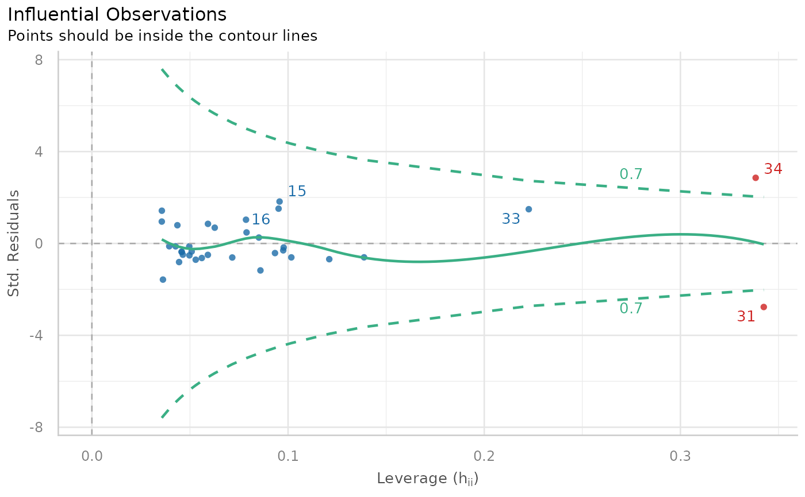

Outliers detection (check for influential observations)
Source:R/check_outliers.R
check_outliers.RdChecks for and locates influential observations (i.e., "outliers") via several distance and/or clustering methods. If several methods are selected, the returned "Outlier" vector will be a composite outlier score, made of the average of the binary (0 or 1) results of each method. It represents the probability of each observation of being classified as an outlier by at least one method. The decision rule used by default is to classify as outliers observations which composite outlier score is superior or equal to 0.5 (i.e., that were classified as outliers by at least half of the methods). See the Details section below for a description of the methods.
Usage
check_outliers(x, ...)
# S3 method for default
check_outliers(
x,
method = c("cook", "pareto"),
threshold = NULL,
ID = NULL,
...
)
# S3 method for numeric
check_outliers(x, method = "zscore_robust", threshold = NULL, ...)
# S3 method for data.frame
check_outliers(x, method = "mahalanobis", threshold = NULL, ID = NULL, ...)Arguments
- x
A model or a data.frame object.
- ...
When
method = "ics", further arguments in...are passed down toICSOutlier::ics.outlier(). Whenmethod = "mahalanobis", they are passed down tostats::mahalanobis().- method
The outlier detection method(s). Can be
"all"or some of"cook","pareto","zscore","zscore_robust","iqr","ci","eti","hdi","bci","mahalanobis","mahalanobis_robust","mcd","ics","optics"or"lof".- threshold
A list containing the threshold values for each method (e.g.
list('mahalanobis' = 7, 'cook' = 1)), above which an observation is considered as outlier. IfNULL, default values will be used (see 'Details'). If a numeric value is given, it will be used as the threshold for any of the method run.- ID
Optional, to report an ID column along with the row number.
Value
A logical vector of the detected outliers with a nice printing method: a check (message) on whether outliers were detected or not. The information on the distance measure and whether or not an observation is considered as outlier can be recovered with the as.data.frame
function. Note that the function will (silently) return a vector of FALSE
for non-supported data types such as character strings.
Details
Outliers can be defined as particularly influential observations. Most methods rely on the computation of some distance metric, and the observations greater than a certain threshold are considered outliers. Importantly, outliers detection methods are meant to provide information to consider for the researcher, rather than to be an automatized procedure which mindless application is a substitute for thinking.
An example sentence for reporting the usage of the composite method could be:
"Based on a composite outlier score (see the 'check_outliers' function in the 'performance' R package; Lüdecke et al., 2021) obtained via the joint application of multiple outliers detection algorithms (Z-scores, Iglewicz, 1993; Interquartile range (IQR); Mahalanobis distance, Cabana, 2019; Robust Mahalanobis distance, Gnanadesikan and Kettenring, 1972; Minimum Covariance Determinant, Leys et al., 2018; Invariant Coordinate Selection, Archimbaud et al., 2018; OPTICS, Ankerst et al., 1999; Isolation Forest, Liu et al. 2008; and Local Outlier Factor, Breunig et al., 2000), we excluded n participants that were classified as outliers by at least half of the methods used."
Note
There is also a
plot()-method
implemented in the
see-package. Please
note that the range of the distance-values along the y-axis is re-scaled
to range from 0 to 1.
Model-specific methods
Cook's Distance: Among outlier detection methods, Cook's distance and leverage are less common than the basic Mahalanobis distance, but still used. Cook's distance estimates the variations in regression coefficients after removing each observation, one by one (Cook, 1977). Since Cook's distance is in the metric of an F distribution with p and n-p degrees of freedom, the median point of the quantile distribution can be used as a cut-off (Bollen, 1985). A common approximation or heuristic is to use 4 divided by the numbers of observations, which usually corresponds to a lower threshold (i.e., more outliers are detected). This only works for frequentist models. For Bayesian models, see
pareto.Pareto: The reliability and approximate convergence of Bayesian models can be assessed using the estimates for the shape parameter k of the generalized Pareto distribution. If the estimated tail shape parameter k exceeds 0.5, the user should be warned, although in practice the authors of the loo::loo package observed good performance for values of k up to 0.7 (the default threshold used by
performance).
Univariate methods
Z-scores
("zscore", "zscore_robust"): The Z-score, or standard score, is a way of describing a data point as deviance from a central value, in terms of standard deviations from the mean ("zscore") or, as it is here the case ("zscore_robust") by default (Iglewicz, 1993), in terms of Median Absolute Deviation (MAD) from the median (which are robust measures of dispersion and centrality). The default threshold to classify outliers is 1.959 (threshold = list("zscore" = 1.959)), corresponding to the 2.5% (qnorm(0.975)) most extreme observations (assuming the data is normally distributed). Importantly, the Z-score method is univariate: it is computed column by column. If a dataframe is passed, the Z-score is calculated for each variable separately, and the maximum (absolute) Z-score is kept for each observations. Thus, all observations that are extreme on at least one variable might be detected as outliers. Thus, this method is not suited for high dimensional data (with many columns), returning too liberal results (detecting many outliers).IQR
("iqr"): Using the IQR (interquartile range) is a robust method developed by John Tukey, which often appears in box-and-whisker plots (e.g., in ggplot2::geom_boxplot). The interquartile range is the range between the first and the third quartiles. Tukey considered as outliers any data point that fell outside of either 1.5 times (the default threshold is 1.7) the IQR below the first or above the third quartile. Similar to the Z-score method, this is a univariate method for outliers detection, returning outliers detected for at least one column, and might thus not be suited to high dimensional data. The distance score for the IQR is the absolute deviation from the median of the upper and lower IQR thresholds. Then, this value is divided by the IQR threshold, to “standardize” it and facilitate interpretation.CI
("ci", "eti", "hdi", "bci"): Another univariate method is to compute, for each variable, some sort of "confidence" interval and consider as outliers values lying beyond the edges of that interval. By default,"ci"computes the Equal-Tailed Interval ("eti"), but other types of intervals are available, such as Highest Density Interval ("hdi") or the Bias Corrected and Accelerated Interval ("bci"). The default threshold is0.95, considering as outliers all observations that are outside the 95% CI on any of the variable. SeebayestestR::ci()for more details about the intervals. The distance score for the CI methods is the absolute deviation from the median of the upper and lower CI thresholds. Then, this value is divided by the difference between the upper and lower CI bounds divided by two, to “standardize” it and facilitate interpretation.
Multivariate methods
Mahalanobis Distance: Mahalanobis distance (Mahalanobis, 1930) is often used for multivariate outliers detection as this distance takes into account the shape of the observations. The default
thresholdis often arbitrarily set to some deviation (in terms of SD or MAD) from the mean (or median) of the Mahalanobis distance. However, as the Mahalanobis distance can be approximated by a Chi squared distribution (Rousseeuw and Van Zomeren, 1990), we can use the alpha quantile of the chi-square distribution with k degrees of freedom (k being the number of columns). By default, the alpha threshold is set to 0.025 (corresponding to the 2.5\ Cabana, 2019). This criterion is a natural extension of the median plus or minus a coefficient times the MAD method (Leys et al., 2013).Robust Mahalanobis Distance: A robust version of Mahalanobis distance using an Orthogonalized Gnanadesikan-Kettenring pairwise estimator (Gnanadesikan and Kettenring, 1972). Requires the bigutilsr::bigutilsr package. See the
bigutilsr::dist_ogk()function.Minimum Covariance Determinant (MCD): Another robust version of Mahalanobis. Leys et al. (2018) argue that Mahalanobis Distance is not a robust way to determine outliers, as it uses the means and covariances of all the data - including the outliers - to determine individual difference scores. Minimum Covariance Determinant calculates the mean and covariance matrix based on the most central subset of the data (by default, 66\ is deemed to be a more robust method of identifying and removing outliers than regular Mahalanobis distance.
Invariant Coordinate Selection (ICS): The outlier are detected using ICS, which by default uses an alpha threshold of 0.025 (corresponding to the 2.5\ value for outliers classification. Refer to the help-file of
ICSOutlier::ics.outlier()to get more details about this procedure. Note thatmethod = "ics"requires both ICS and ICSOutlier::ICSOutlier to be installed, and that it takes some time to compute the results.OPTICS: The Ordering Points To Identify the Clustering Structure (OPTICS) algorithm (Ankerst et al., 1999) is using similar concepts to DBSCAN (an unsupervised clustering technique that can be used for outliers detection). The threshold argument is passed as
minPts, which corresponds to the minimum size of a cluster. By default, this size is set at 2 times the number of columns (Sander et al., 1998). Compared to the other techniques, that will always detect several outliers (as these are usually defined as a percentage of extreme values), this algorithm functions in a different manner and won't always detect outliers. Note thatmethod = "optics"requires the dbscan::dbscan package to be installed, and that it takes some time to compute the results.Local Outlier Factor: Based on a K nearest neighbors algorithm, LOF compares the local density of a point to the local densities of its neighbors instead of computing a distance from the center (Breunig et al., 2000). Points that have a substantially lower density than their neighbors are considered outliers. A LOF score of approximately 1 indicates that density around the point is comparable to its neighbors. Scores significantly larger than 1 indicate outliers. The default threshold of 0.025 will classify as outliers the observations located at
qnorm(1-0.025) * SD)of the log-transformed LOF distance. Requires the dbscan::dbscan package.
Threshold specification
Default thresholds are currently specified as follows:
list(
zscore = stats::qnorm(p = 1 - 0.001 / 2),
zscore_robust = stats::qnorm(p = 1 - 0.001 / 2),
iqr = 1.7,
ci = 1 - 0.001,
eti = 1 - 0.001,
hdi = 1 - 0.001,
bci = 1 - 0.001,
cook = stats::qf(0.5, ncol(x), nrow(x) - ncol(x)),
pareto = 0.7,
mahalanobis = stats::qchisq(p = 1 - 0.001, df = ncol(x)),
mahalanobis_robust = stats::qchisq(p = 1 - 0.001, df = ncol(x)),
mcd = stats::qchisq(p = 1 - 0.001, df = ncol(x)),
ics = 0.001,
optics = 2 * ncol(x),
lof = 0.001
)Meta-analysis models
For meta-analysis models (e.g. objects of class rma from the metafor
package or metagen from package meta), studies are defined as outliers
when their confidence interval lies outside the confidence interval of the
pooled effect.
References
Archimbaud, A., Nordhausen, K., and Ruiz-Gazen, A. (2018). ICS for multivariate outlier detection with application to quality control. Computational Statistics and Data Analysis, 128, 184-199. doi:10.1016/j.csda.2018.06.011
Gnanadesikan, R., and Kettenring, J. R. (1972). Robust estimates, residuals, and outlier detection with multiresponse data. Biometrics, 81-124.
Bollen, K. A., and Jackman, R. W. (1985). Regression diagnostics: An expository treatment of outliers and influential cases. Sociological Methods and Research, 13(4), 510-542.
Cabana, E., Lillo, R. E., and Laniado, H. (2019). Multivariate outlier detection based on a robust Mahalanobis distance with shrinkage estimators. arXiv preprint arXiv:1904.02596.
Cook, R. D. (1977). Detection of influential observation in linear regression. Technometrics, 19(1), 15-18.
Iglewicz, B., and Hoaglin, D. C. (1993). How to detect and handle outliers (Vol. 16). Asq Press.
Leys, C., Klein, O., Dominicy, Y., and Ley, C. (2018). Detecting multivariate outliers: Use a robust variant of Mahalanobis distance. Journal of Experimental Social Psychology, 74, 150-156.
Liu, F. T., Ting, K. M., and Zhou, Z. H. (2008, December). Isolation forest. In 2008 Eighth IEEE International Conference on Data Mining (pp. 413-422). IEEE.
Lüdecke, D., Ben-Shachar, M. S., Patil, I., Waggoner, P., and Makowski, D. (2021). performance: An R package for assessment, comparison and testing of statistical models. Journal of Open Source Software, 6(60), 3139. doi:10.21105/joss.03139
Rousseeuw, P. J., and Van Zomeren, B. C. (1990). Unmasking multivariate outliers and leverage points. Journal of the American Statistical association, 85(411), 633-639.
See also
Other functions to check model assumptions and and assess model quality:
check_autocorrelation(),
check_collinearity(),
check_convergence(),
check_heteroscedasticity(),
check_homogeneity(),
check_model(),
check_overdispersion(),
check_predictions(),
check_singularity(),
check_zeroinflation()
Examples
data <- mtcars # Size nrow(data) = 32
# For single variables ------------------------------------------------------
outliers_list <- check_outliers(data$mpg) # Find outliers
outliers_list # Show the row index of the outliers
#> OK: No outliers detected.
#> - Based on the following method and threshold: zscore_robust (3.291).
#> - For variable: data$mpg
#>
#>
as.numeric(outliers_list) # The object is a binary vector...
#> [1] 0 0 0 0 0 0 0 0 0 0 0 0 0 0 0 0 0 0 0 0 0 0 0 0 0 0 0 0 0 0 0 0
filtered_data <- data[!outliers_list, ] # And can be used to filter a dataframe
nrow(filtered_data) # New size, 28 (4 outliers removed)
#> [1] 32
# Find all observations beyond +/- 2 SD
check_outliers(data$mpg, method = "zscore", threshold = 2)
#> 2 outliers detected: cases 18, 20.
#> - Based on the following method and threshold: zscore (2).
#> - For variable: data$mpg.
#>
#> -----------------------------------------------------------------------------
#> Outliers per variable (zscore):
#>
#> $`data$mpg`
#> Row Distance_Zscore
#> 18 18 2.042389
#> 20 20 2.291272
#>
# For dataframes ------------------------------------------------------
check_outliers(data) # It works the same way on dataframes
#> OK: No outliers detected.
#> - Based on the following method and threshold: mahalanobis (31.264).
#> - For variables: mpg, cyl, disp, hp, drat, wt, qsec, vs, am, gear, carb
#>
#>
# You can also use multiple methods at once
outliers_list <- check_outliers(data, method = c(
"mahalanobis",
"iqr",
"zscore"
))
outliers_list
#> OK: No outliers detected.
#> - Based on the following methods and thresholds: mahalanobis (3.291), iqr (2), zscore (31.264).
#> - For variables: mpg, cyl, disp, hp, drat, wt, qsec, vs, am, gear, carb
#>
#>
# Using `as.data.frame()`, we can access more details!
outliers_info <- as.data.frame(outliers_list)
head(outliers_info)
#> Row Distance_Zscore Outlier_Zscore Distance_IQR Outlier_IQR
#> 1 1 1.189901 0 0.4208483 0
#> 2 2 1.189901 0 0.2941176 0
#> 3 3 1.224858 0 0.5882353 0
#> 4 4 1.122152 0 0.5882353 0
#> 5 5 1.043081 0 0.3915954 0
#> 6 6 1.564608 0 0.6809025 0
#> Distance_Mahalanobis Outlier_Mahalanobis Outlier
#> 1 8.946673 0 0
#> 2 8.287933 0 0
#> 3 8.937150 0 0
#> 4 6.096726 0 0
#> 5 5.429061 0 0
#> 6 8.877558 0 0
outliers_info$Outlier # Including the probability of being an outlier
#> [1] 0.0000000 0.0000000 0.0000000 0.0000000 0.0000000 0.0000000 0.0000000
#> [8] 0.0000000 0.3333333 0.0000000 0.0000000 0.0000000 0.0000000 0.0000000
#> [15] 0.0000000 0.3333333 0.0000000 0.0000000 0.0000000 0.0000000 0.0000000
#> [22] 0.0000000 0.0000000 0.0000000 0.0000000 0.0000000 0.0000000 0.0000000
#> [29] 0.0000000 0.0000000 0.3333333 0.0000000
# And we can be more stringent in our outliers removal process
filtered_data <- data[outliers_info$Outlier < 0.1, ]
# We can run the function stratified by groups using `{datawizard}` package:
group_iris <- datawizard::data_group(iris, "Species")
check_outliers(group_iris)
#> OK: No outliers detected.
#> - Based on the following method and threshold: mahalanobis (20).
#> - For variables: Sepal.Length, Sepal.Width, Petal.Length, Petal.Width
#>
#>
# \dontrun{
# You can also run all the methods
check_outliers(data, method = "all")
#> 3 outliers detected: cases 9, 29, 31.
#> - Based on the following methods and thresholds: zscore_robust (3.291),
#> iqr (2), ci (1), cook (1), pareto (0.7), mahalanobis (31.264),
#> mahalanobis_robust (31.264), mcd (31.264), ics (0.001), optics (22), lof
#> (0.001).
#> - For variables: mpg, cyl, disp, hp, drat, wt, qsec, vs, am, gear, carb.
#> Note: Outliers were classified as such by at least half of the selected methods.
#>
#> -----------------------------------------------------------------------------
#>
#> The following observations were considered outliers for two or more
#> variables by at least one of the selected methods:
#>
#> Row n_Zscore_robust n_IQR n_ci n_Mahalanobis_robust n_MCD
#> 1 3 2 0 0 0 0
#> 2 9 2 1 1 (Multivariate) (Multivariate)
#> 3 18 2 0 0 0 0
#> 4 19 2 0 2 0 (Multivariate)
#> 5 20 2 0 2 0 0
#> 6 26 2 0 0 0 0
#> 7 28 2 0 1 (Multivariate) (Multivariate)
#> 8 31 2 2 2 (Multivariate) (Multivariate)
#> 9 32 2 0 0 0 0
#> 10 8 1 0 0 0 (Multivariate)
#> 11 21 1 0 0 (Multivariate) (Multivariate)
#> 12 27 1 0 0 (Multivariate) 0
#> 13 29 1 0 1 (Multivariate) (Multivariate)
#> 14 30 1 0 0 0 (Multivariate)
#> 15 7 0 0 0 (Multivariate) (Multivariate)
#> 16 24 0 0 0 (Multivariate) (Multivariate)
#> n_ICS
#> 1 0
#> 2 (Multivariate)
#> 3 0
#> 4 0
#> 5 0
#> 6 0
#> 7 0
#> 8 0
#> 9 0
#> 10 0
#> 11 0
#> 12 0
#> 13 (Multivariate)
#> 14 0
#> 15 0
#> 16 0
# For statistical models ---------------------------------------------
# select only mpg and disp (continuous)
mt1 <- mtcars[, c(1, 3, 4)]
# create some fake outliers and attach outliers to main df
mt2 <- rbind(mt1, data.frame(
mpg = c(37, 40), disp = c(300, 400),
hp = c(110, 120)
))
# fit model with outliers
model <- lm(disp ~ mpg + hp, data = mt2)
outliers_list <- check_outliers(model)
if (require("see")) {
plot(outliers_list)
}

insight::get_data(model)[outliers_list, ] # Show outliers data
#> Warning: Could not recover model data from environment. Please make sure your
#> data is available in your workspace.
#> Trying to retrieve data from the model frame now.
#> disp mpg hp
#> Maserati Bora 301 15 335
#> 2 400 40 120
# }